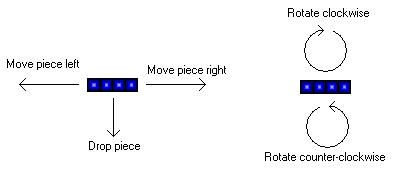
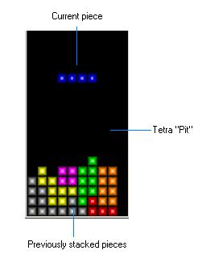
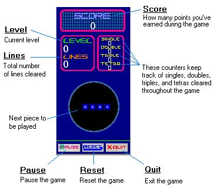
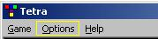

The objective of Tetra is to position the falling blocks in such a way as to prevent them from reaching the top of the Tetra pit, or well. When the game begins, the Tetra pit is empty. Blocks will begin falling from the top of the pit. They can be manipulated as follows:
Use the left and right arrow keys (default setup) to move the piece horizontally, and the down arrow key to drop it into place. The space bar and control key rotate the piece clockwise and counter-clockwise, respectively. Try to position the blocks in such a way as to fill an entire horizontal row. When a row becomes completely full of blocks, it will disappear, and the rows above it will drop down. You can clear from one to four lines at a time. Clearing four lines simultaneously is known as a Tetra (actually, its real name is Tetris, but since this game is a clone, I get to make my own names.) Obviously, more lines equals more points. Additionally, as the levels increase, so do the points rewarded. The game tracks your score, the number of lines you have cleared, as well as a breakdown of the number of singles, doubles, triples, and tetras completed, as well as your level.
|  |  |
The only other aspect of the game that may need explanation is the Options menu.
This menu allows you to customize your game. You can choose the music, the look of the Tetra pieces, whether or not sound plays and the next piece is shown. In addition, you can customize your key settings to make game play more comfortable for you. So good luck, and have fun!